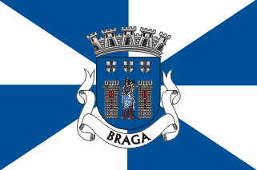

Braga
Rua Do Campo
Rua Nova
Rua Dos Acougues Velhos
Praça Do Pão
Rua Das Oucias
Rua Do Souto/Praça Do Souto
Loura E Terreiro Do Castelo
Rua De Janes
Rua De S.João
Travessa Da Rua De S. João Para A Do Forno
Rua Dos Cegos Ou Do Forno
Travessa Da Rua Do Forno Para A Do Poco
Rua Pequena
Rua De Sta. Maria Ou Do Poço
Travessa Da Rua Do Poço Para A De D.Gualdim
Rua De D. Gualdim
Travessa Da Rua De D.Gualdim Até Ao Couto Do Arvoredo
Rua Das Chagas
Rua De Sto. António
Terreiro De Sto. António E Postigo
Rua Verde
Rua De Maximinos
Rua Dos Sapateiros E Rossio Da Praça
Rua Da Vielinha
Campo De S. Sebastião E Em Frente Do Açougue
Rua De S.Miguel O Anjo
Rua Da Cruz De Pedra
Rua Direita
Rua Do Beco
Cangosta De S. Sebastião
Rua Do Alcaide
Rua Dos Pelames
Campo De S. Tiago
Cangosta Das Cruzes
Rua De S. Marcos
Rua Das Águas
Rua De S. Lázaro
Rua Da Ponte De Guimarães
Ponte De Guimarães
Rua Do Paymanta
Campo De Santa Ana
Campo E Calçada De Nossa Senhora A Branca
Campo De Nossa Senhora À Branca/Rua Da Régua/Rua Nova Da Seara
Rua Da Fonte Da Carcova
Rua Dos Chãos De Baixo
Rua De Santo André
Rua De S. Barnabé
Praça Do Gavião
Rua De S. Gonçalo
Rua De Nossa Senhora De Guadalupe
Rua Da Oliveira
Rua Em Frente De Nossa Senhora De Guadalupe
Rua Dos Chãos De Cima
Rua Das Palhotas
Rua De Infias
Cangosta Da Escoura
Estrada De Real
Rua Da Cónega
Rua Dos Biscaínhos
Cangosta Da Rua Das Águas